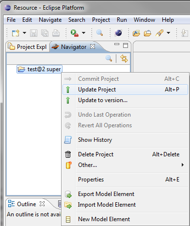
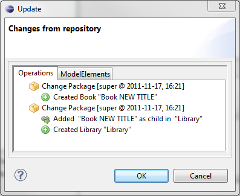

How to create a custom client
Follow the steps below to create a client that can fetch, add and commit projects from and to your EMF Store.
Step 1: Get EMF Store and EMF Client Platform
This tutorial assumes that you have running Eclipse with the plugins EMF Store and EMF Client Platform installed.
Please refer to the tutorials here and here to get up and running.
Step 2: Download and import the example client and an example Model
If you followed both tutorials above, you will already have the example model in your workspace.
Otherwise, please refer to Step 3 in this tutorial.
You can import the example client the same way using the "Existing Project into Workspace" wizard.
Step 3: Create a new project
Run the EMF Store, explained under Step 4 here, and subsequently run the EMF Client Platform and create a new project in the EMF Client Platform you just started and share it, explained under Step 4 and 5 respectively in this tutorial.
Step 4: Running the example client
Return to the first instance of Eclipse where you imported the examples and run the example client using "right Click >>> Run As >>> Eclipse Application".
You can now update this project in the other Eclipse instance from within the Navigator view. Right-Click the project you created and click Update Project

The EMF Client Platform will now connect to the EMF Store and fetch the changes made by the example client.
As a result you should see the following update confirmation.

Congratulations, you just accessed and modified your centrally stored project from two different clients.
In the following sections you will learn how the code of the example client works, and how you can start modifying it to your needs.
Application.java: The main extension of your plugin
package exampleclient;
import java.util.List;
import library.Book;
import library.Library;
import library.LibraryFactory;
import org.eclipse.emf.emfstore.client.model.ProjectSpace;
import org.eclipse.emf.emfstore.client.model.Usersession;
import org.eclipse.emf.emfstore.client.model.WorkspaceManager;
import org.eclipse.emf.emfstore.client.model.util.EMFStoreClientUtil;
import org.eclipse.emf.emfstore.client.model.util.EMFStoreCommand;
import org.eclipse.emf.emfstore.common.model.Project;
import org.eclipse.emf.emfstore.common.model.util.ModelUtil;
import org.eclipse.emf.emfstore.server.exceptions.AccessControlException;
import org.eclipse.emf.emfstore.server.exceptions.EmfStoreException;
import org.eclipse.emf.emfstore.server.model.ProjectInfo;
import org.eclipse.equinox.app.IApplication;
import org.eclipse.equinox.app.IApplicationContext;
public class Application implements IApplication {
WorkspaceManager.init();
// run a client that commits to the first project it can find on the
// server
runClient();
return IApplication.EXIT_OK;
}
System.
out.
println("Client starting...");
new EMFStoreCommand() {
@Override
protected void doRun() {
try {
Usersession usersession = EMFStoreClientUtil
.createUsersession();
usersession.logIn();
List<ProjectInfo> projectList;
projectList = usersession.getRemoteProjectList();
ProjectInfo projectInfo = projectList.iterator().next();
ProjectSpace projectSpace = usersession
.checkout(projectInfo);
Project project = projectSpace.getProject();
Book book
= LibraryFactory.
eINSTANCE.
createBook(); book.setTitle("NEW TITLE");
project.addModelElement(book);
projectSpace.commit();
Library library = LibraryFactory.eINSTANCE.createLibrary();
project.addModelElement(library);
library.getBooks().add(book);
projectSpace.commit();
System.
out.
println("Client run completed."); ModelUtil.logException(e);
} catch (EmfStoreException e) {
ModelUtil.logException(e);
}
}
}.run(false);
}
public void stop() {
// TODO Auto-generated method stub
}
}